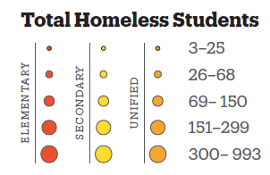
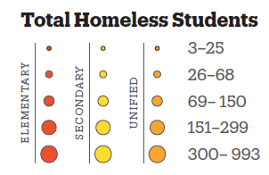

Why is this topic important?
Homelessness Statistics
Of those experiencing homelessness, 60 percent found refuge in sheltered locations (like emergency shelters, safe havens, or transitional housing programs). The other 40 percent spent their nights unsheltered (often on the street, in abandoned buildings, or in other places not designated/suitable for human habitation).
In 2023, the numbers of NJ homeless population’s housing situations (including emergency shelter, transitional housing, unshelter, and safe haven) have all increased since 2022.
Who is Affected?
Homelessness Among Students in NJ
During the 2021-2022 FAFSA application cycle, a total of 31,749 applications were determined to be (or at risk of becoming) unaccompanied homeless youth, either by an agency (self-reported on the FAFSA) or by a school financial aid administrator.
Three school districts had over 400 homeless students (Vineland Public, Edison Township, and Newark Public). In four school districts, over 9.5% of students were homeless, close to 14 times the statewide rate (Rancocas Valley Regional High, Delsea Regional High, Greater Egg Harbor Regional High, and Westville Boro Public).
 
Source:

Source: